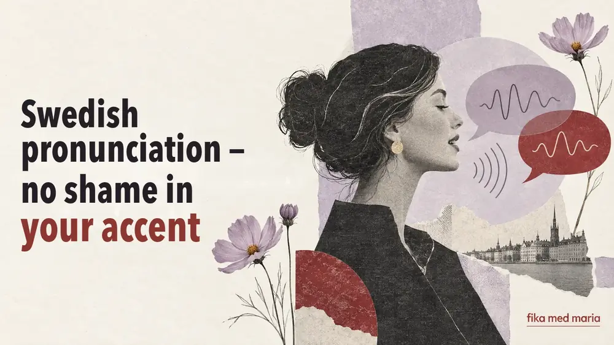
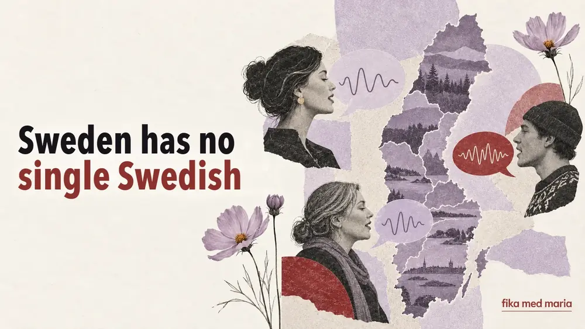
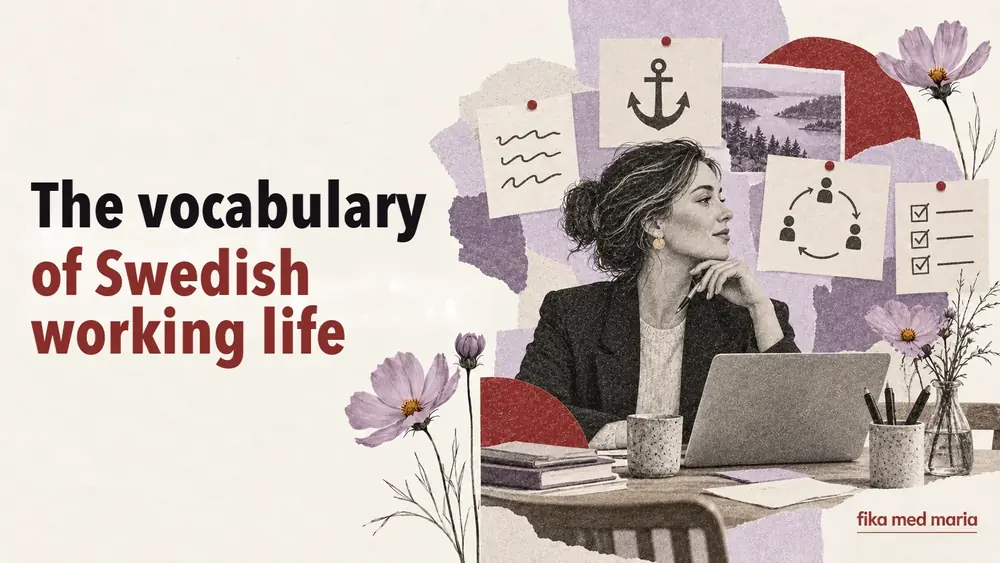
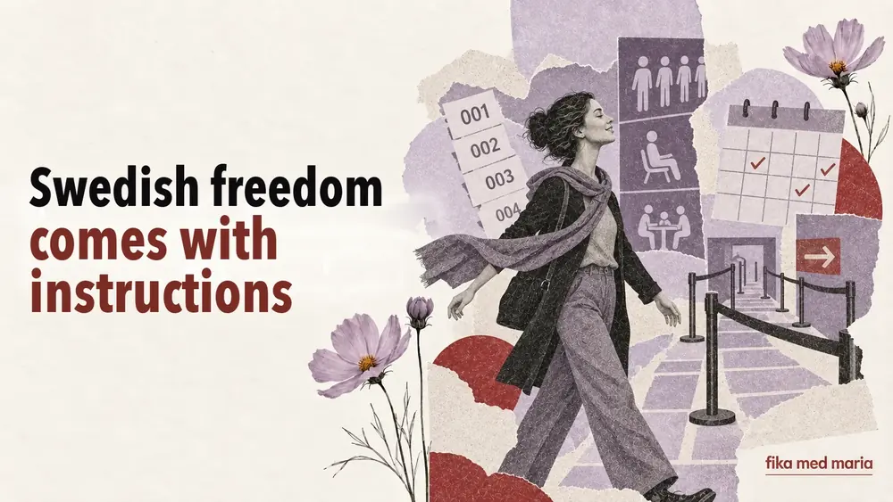
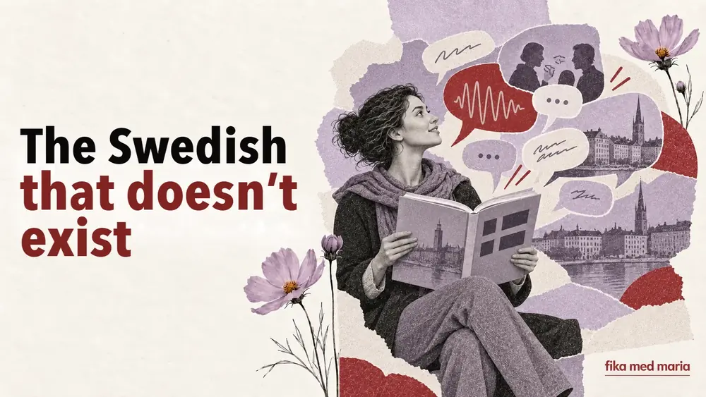
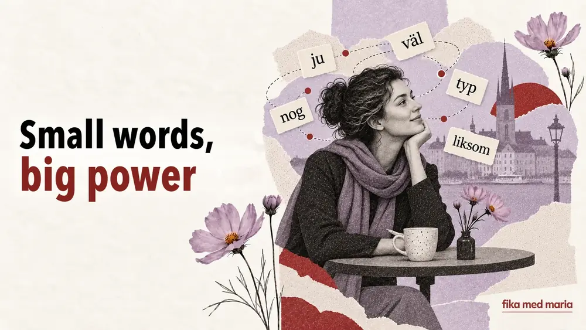
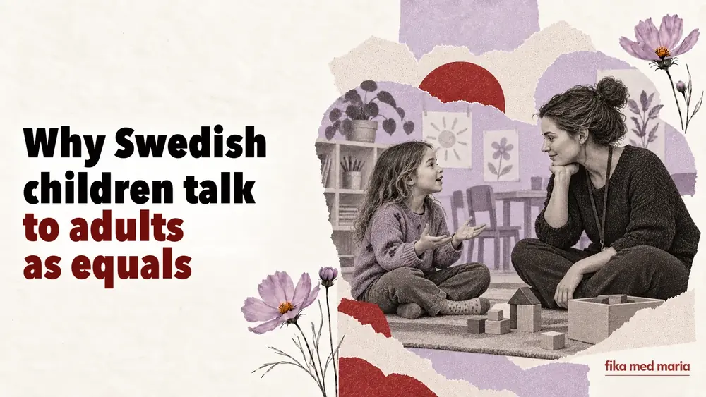
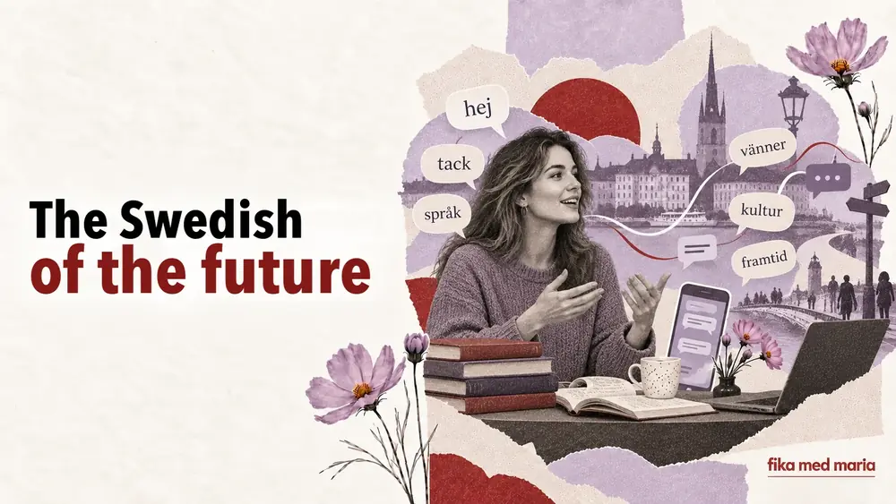

Can you sound Swedish without losing your accent?
Do you need to get rid of your accent to speak Swedish well? We look at pronunciation, rhythm, intelligibility and realistic goals.
Living Swedish, words and phrases, Swedish culture, life in Sweden and tips on how to learn the language regularly.

Do you need to get rid of your accent to speak Swedish well? We look at pronunciation, rhythm, intelligibility and realistic goals.

Why Swedish sounds different from region to region, what counts as the standard and which pronunciation a student should prepare for.

What prestigelös, förankra, avstämning, återkoppling and högt i tak mean – and what these words reveal about working life in Sweden.

Why personal freedom in Sweden goes hand in hand with queues, arrangements and rules – seen through language and everyday situations.

Why is spoken Swedish so different from textbook dialogues? We look at contractions, particles and the real phrases Swedes use.

How to recognise criticism, refusal and irritation in Swedish, even when the other person speaks calmly and politely.

A simple explanation of five Swedish words that change the tone of a sentence: ju, väl, nog, typ and liksom – with real-life examples.
Why Ukrainians and Swedes show care, say no and ask personal questions in different ways – with examples of Swedish phrases.

Why Swedish children address adults as du, voice disagreement and take part in decisions – with useful phrases for parents.

Fika is more than coffee and a bun. How it works at home and at work, what people talk about and which Swedish phrases you need.

How the words fredagsmys, lillördag, lördagsgodis and söndagsångest describe everyday life and the mood of the week in Sweden.

How English, social media, youth slang and multilingual Sweden are changing modern Swedish – and which parts of it a student should learn.